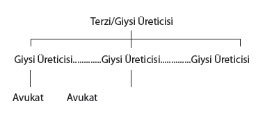
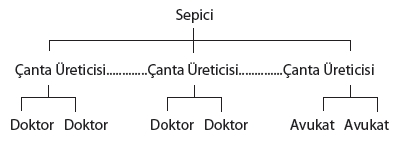

Joe Flom’dan Alınacak Üç Ders
“MARY BİR ÇEYREKLİK ALIRDI.”
1.
Joe Flom, hukuk şirketi Skadden, Arps, Slate, Meagher and Flom’un yaşayan son “atanmış” ortağı. Manhattan’daki Condé Nast kulesinin tepesinde bir köşe ofisine sahip. Kısa boylu ve biraz kambur. Dikkat çekici, büyük kulaklarının ortasında kocaman bir kafası var ve havacı tarzı iri gözlükleri küçük mavi gözlerini saklıyor. Şu an dal gibi, ancak en parlak döneminde, aşırı kiloluydu. Flom sağa sola sallanarak yürüyor. Düşünürken bir şeyler karalıyor. Mırıldanarak konuşuyor ve o Skadden, Arps koridorlarında ilerlerken konuşmalar fısıltıya dönüşüyor.
Flom Büyük Buhran döneminde Brooklyn’in Borough Park çevresinde büyüdü. Anne babası Doğu Avrupa’dan göç etmiş Musevilerdi. Babası Isadore giyim sektöründe sendikacıydı, daha sonra kadın elbiseleri için vatka dikme işine devam etti. Annesi parça başı denilen tarzda çalışıyor, evde aplike yapıyordu. Aile son derece yoksuldu. Flom’un büyüme çağında hemen her yıl taşınıyorlardı, çünkü o zamanlar toprak sahiplerinin yeni kiracılardan bir ay para almaması gelenekti ve aile bu avantajdan yararlanmaksızın ayakta kalamıyordu.
Flom ortaokulda Manhattan’daki Lexington Caddesi’nde bulunan Townsend Harris adlı seçkin devlet lisesinin giriş sınavlarına girdi; bu okul sadece 40 yıl içinde üç Nobel Ödülü sahibi, altı Pulitzer Ödülü sahibi ve bir Yüksek Mahkeme Yargıcı çıkardı; George Gershwin ve çocuk felci aşısını bulan Jonas Salk’ı da unutmamak gerek. Flom okulu kazandı. Annesi ona sabahları kahvaltı –Nedick’s adlı kafede üç tane donut, portakal suyu ve kahve– için 10 sent veriyordu. Okuldan sonra giysi üretilen bölgede el arabasıyla mal taşıdı. İki yıl –gündüzleri hayatını kazanmak için çalışırken– yukarı Manhattan’daki City College’da gece okuluna devam etti, askere yazıldı, görevini tamamladı ve Harvard Hukuk Fakültesi’ne başvurdu.
“Altı yaşından beri hukuk fakültesine gitmek istiyordum” diyor Flom. Üniversite diploması yoktu. Harvard yine de onu kabul etti. “Neden mi? Çünkü onlara neden en iyi olduğumu anlatan bir mektup yazdım” diye açıklıyor durumu Flom kısa ve özet bir biçimde. 1940’ların sonlarında o Harvard’da hiç not almıyordu. “Bu ilk yıl ahmaklığını hepimiz yapıyorduk; sınıfta dikkatle not alıyor, onun özetini çıkarıyor, sonra onu da kısaltıyor ve ardından diğer kağıdın üzerine bir pelür kağıt yerleştirerek bunu tekrarlıyorduk” diye aktarıyor anımsadıklarını Flom’un sınıf arkadaşlarından Charles Haar. “Bu vakaları öğrenmeye çalışmanın rutin bir yoluydu. Joe içinse değil. O bunu yapmıyordu. Ancak bizim her zaman muğlak biçimde ‘bir avukat gibi düşünmek’ sınıfına soktuğumuz bir niteliği vardı. Doğru karar vermek konusunda müthiş bir kapasiteye sahipti.”
Flom Law Review’a atanmıştı, bu sınıfta sadece en iyi öğrencilere verilen bir onurdu. İkinci yılının Noel tatilinde, “işe alma sezonu” sırasında, günün büyük kurumsal hukuk şirketleriyle görüşmeler yapmak için New York’a gitti. “Hantal, sakar, şişman bir çocuktum” diye aktarıyor anımsadıklarını Flom. “İşe alma sezonunun sonunda sınıfta işsiz kalmış iki çocuktan biriydim. Sonra bir gün profesörlerimden biri bir şirket kurmakta olan bu beylerden söz etti. Onlarla bir görüşme yaptım ve bütün görüşme boyunca bana hiç müşterisi olmayan bir şirkete girmenin risklerinden söz ettiler. Konuştukça onları daha çok sevdim. Bu nedenle, ne olursa olsun, şansımı deneyeceğim, dedim. Başlangıç maaşı olarak yılda 3.600 doları bir araya getirmek zorundaydılar.” Başlangıçta sadece –ikisi de ortaklık için Wall Street’teki büyük bir hukuk şirketini geri çevirmiş olan– Marshall Skadden ve Leslie Arps, bir de Pan Am Havayolları için çalışmış olan John Slate vardı. Flom onların sınırlı ortağıydı. Ofis olarak Wall Street’teki Lehman Brothers binasının en üst katında minik bir süitleri vardı. “Ne tür hukuk işleriyle mi ilgileniyorduk?” diyor Flom gülerek. “Kapıya ne gelirse!”
Flom 1954’te Skadden’ın idari ortaklığını üstlendi ve şirket çok hızlı ve başarılı bir şekilde büyüdü. Çok geçmeden 100 avukatı oldu. Sonra 200. 300’e ulaştığında Flom’un ortaklarından biri –Morris Kramer– ona geldi ve artık genç hukuk fakültesi mezunlarını getirmekten suçluluk duyduğunu söyledi. Skadden o kadar büyük ki, diyordu Kramer, şirketin daha da büyüyeceğini ve bu yeni çalışanları terfi ettireceğini hayal bile etmek olanaksız. Flom ona “Aman, bine kadar gidelim” dedi. Flom asla azmini yitirmemişti.
Bugün Skadden, Arps dünyaya yayılmış 23 ofisinde yaklaşık 2.000 avukata sahip ve yılda 1 milyar doların oldukça üzerinde kazanıyor; bu da onu dünyanın en büyük ve en güçlü hukuk şirketlerinden biri kılıyor. Flom’un ofisinde George Bush Sr. ve Bill Clinton’la çekilmiş fotoğrafları var. Manhattan’ın yukarı doğu yakasındaki lüks bir binada geniş bir dairede yaşıyor. Yaklaşık son 30 yıl içinde, Fortune 500 şirketlerinden birini devretmek ya da devralmak durumunda kaldıysanız ya da sadece herhangi bir açmaz içinde kalmış kodamanlardan biriyseniz, mutlaka, avukatınız Joseph Flom, hukuk şirketiniz ise Skadden, Arps olmuştur; olmadıysa da büyük olasılıkla olmasını dilemişsinizdir.
2.
Artık bu tür hikayeler hakkında kuşkucu olduğunuzu umut ediyorum. Parlak zeka sahibi göçmen çocuk yoksulluğu ve Büyük Buhran’ı alt eder, kent merkezindeki eski moda hukuk şirketlerinde iş bulamaz, sadece kendi çalışkanlık ve yeteneğiyle kendi yolunu açar. Bu bir yoksulluktan zenginliğe geçiş hikayesi ve hokey oyuncuları ve yazılım milyarderlerinden Termitler’e kadar öğrendiğimiz her şey, başarının böyle kazanılmadığını ortaya koyuyor. Başarılı insanlar bunu tek başlarına elde etmiyor. Nereden geldikleri önemli. Onlar özel yerlerin ve ortamların ürünü.
O halde, tıpkı Bill Joy ve Chris Langan için yaptığımız gibi, Joseph Flom’a da en başından bakalım, ancak bu kez kitabın ilk dört bölümünden öğrendiğimiz her şeyi kullanalım. Bu üç şeye fazlasıyla sahip olsa da artık Joe Flom’un zekasından, kişiliğinden ya da hırsından söz etmeyelim. Dehasını doğrulamak için müşterilerinden övgü dolu alıntılar yok. Skadden, Arps, Slate, Meagher and Flom’un hızlı ve parlak yükselişinden renkli hikayeler yok.
Bunun yerine, kritik bir soruyu yanıtlama umuduyla, Joe Flom’un içinde büyüdüğü New York göçmenler dünyasından bir dizi hikaye anlatacağım; bir hukuk öğrencisinin, Maurice ve Mort Janklow adlı bir baba oğulun ve Louis ve Regina Borgenicht adlı sıradışı bir çiftin hikayelerini. Joe Flom’un fırsatları nelerdi? Çizginin dışında olanların tüm süreç boyunca yardım aldıklarını bildiğimize göre, Joe Flom’un ekolojisini ayrıştırıp onun yaratılmasına yardımcı olan koşulları da belirleyebilir miyiz?
Yoksulluktan zenginliğe giden kişilerin hikayeleri anlatıyoruz, çünkü ezici olasılıklara karşı savaşan yalnız kahraman fikrinde ilgi çekici bir şeyler buluyoruz. Ancak Joe Flom’un gerçek hayat hikayesi mitolojik versiyondan çok daha ilgi çekici, çünkü onun yaşamında dezavantaj gibi görünen her şey –giysi işçilerinin yoksul çocuğu olması, Musevilere karşı büyük ayrımcılık yapılan bir zamanda Musevi olması, Büyük Buhran döneminde yetişmiş olması– beklenmedik biçimde avantaja dönüşüyor. Joe Flom çizginin dışındakilerden. Ancak düşünebileceğiniz nedenlerle değil; onun yükseliş öyküsü, mesleğindeki başarıyı anlamaya yarayan bir hareket planı sağlıyor. Hatta bu bölümün sonuna geldiğimizde Joe Flom’dan dersler alıp bunları New York kentinin hukuk dünyasına uygulayarak kentin en güçlü avukatlarının aile altyapılarını, yaşlarını ve kökenlerini tahmin etmenin olası olduğunu göreceğiz; onlar hakkında başka hiçbir gerçeği bilmeksizin. Ancak kendimizi aşıyoruz.
Bir Numaralı Ders:
Musevi Olmanın Önemi
3.
Joe Flom’un Harvard Hukuk Fakültesi’ndeki sınıf arkadaşlarından biri Alexander Bickel adlı bir adamdı. Flom gibi Bickel de Brooklyn’de yaşayan Doğu Avrupalı Musevi göçmenlerin oğluydu. Flom gibi Bickel de New York’ta devlet okuluna ve sonra City College’a gitmişti. Flom gibi Bickel de hukuk fakültesindeki sınıfında bir yıldızdı. Hatta kariyeri kanserle yarım kalmasaydı Bickel belki de kuşağının en iyi anayasa hukukçusu olacaktı. Flom ve geri kalan sınıf arkadaşları gibi, Bickel de 1947 Noel’inde “işe alma sezonu” sırasında kendine bir iş bulmak için Manhattan’a gitti.
İlk durağı, Wall Street’te o dönemin herhangi bir şirketi kadar geleneksel ve eski moda olan Mudge Rose’du. Mudge Rose 1869’da kurulmuştu. Nixon da başkanlığı kazandığı 1968’den önceki yıllarda mesleğini orada icra etmişti. “Adını gazetede sadece iki kez –doğduğunda ve öldüğünde– görmek isteyen o kadın gibiyiz” diye çok iyi ifade ediyor kıdemli ortaklardan biri. Bickel’a şirketi gezdirdiler ve bu arada ortaklar birbiri ardına onunla görüştü; sonunda da şirketin kıdemli ortağıyla görüşmesi için kütüphaneye alındı. Sahneyi hayal edebilirsiniz: Koyu renk kaplamaları olan bir oda, ustalıkla eskitilmiş bir İran halısı, sıra sıra deri ciltli hukuk kitapları, duvarda Bay Mudge ile Bay Rose’un yağlıboya tabloları.
“Bütün o görüşmelerden, her şeyden sonra” diyordu yıllar sonra Bickel, “beni [kıdemli ortağın yanına] götürdüler; benim gibi ataları olan bir çocuk için” –göçmen altyapısına ilişkin bu örtmeceyi tekrarlamadan önce Bickel’in nasıl durakladığını hayal edebilirsiniz– “kesinlikle çok başarılı olduğumu söylemeyi kendine görev bilmişti. Ancak onlarınki gibi bir şirketin benim gibi ataları olan bir çocuğu işe alma olasılıklarının ne kadar sınırlı olduğunu anlamalıydım. Ve gösterdiğim gelişme için beni kutluyor olsa da kesinlikle bir iş öneremeyeceğini anlamalıydım. Ancak hepsi beni tanıdıklarına memnun olmuşlardı falan filan.”
Bickel’ın anılarından anlaşılıyor ki onunla röportaj yapan kişi bu bilgilerle ne yapması gerektiğini tam olarak bilmiyor. Bickel röportajın yapıldığı dönem ününün zirvesindeydi. Yüksek Mahkeme önünde birçok savunma yapmıştı. Başarılı kitaplar yayımlamıştı. Mudge Rose’un “ataları” nedeniyle Bickel’a hayır demesi, Chicago Bulls’un Kuzey Carolina’dan gelen siyah çocuklardan rahatsız olunduğu için Michael Jordan’ı geri çevirmesi gibiydi. Hiçbir anlam ifade etmiyordu.
“İyi de ya yıldızlar söz konusu olduğunda?” diye sormuştu röportajı yapan kişi “Size bir ayrıcalık tanıyamazlar mıydı?” anlamında.
BICKEL: “Yıldızlar, starlar…”
1940’larda ve 50’lerde New York’un eski moda hukuk şirketleri özel bir kulüp gibi faaliyet gösteriyordu. Hepsinin de genel merkezi Manhattan’ın iş merkezinde, Wall Street ve çevresindeki granit cepheli, kasvetli binalardaydı. İlk sıralardaki şirketlerin ortakları aynı Ivy League üniversitelerinden mezunlardı, aynı kiliselere gidiyorlar ve yazı Long Island’da aynı okyanus kıyısı kentlerinde geçiriyorlardı. Sade gri takımlar giyiyorlardı. Ortaklıkları –kulüp ya da kokteyl parti tarzı beyaz güderi ayakkabılara açık bir gönderme olarak– “beyaz ayakkabı” şirketleri olarak tanınıyordu ve işe aldıkları kişiler konusunda çok titizdiler. Erwin Smigel’ın o dönemin New York’unda hukukun ileri gelenlerine ilişkin çalışması The Wall Street Lawyer’da yazdığı gibi, şunları arıyorlardı:
Cermen kökenli, sevimli bir kişiliğe sahip, “temiz pak” görünümlü, “doğru okullardan” mezun, “doğru” sosyal altyapıya ve dünya olaylarında deneyime sahip ve çok büyük dayanma gücü olan avukatlar. Eski bir hukuk fakültesi dekanı, öğrencilerin iş bulmak için kazanmaları gereken nitelikleri irdelerken, az çok daha gerçekçi bir tablo sunuyor: “İş bulmak için [öğrenciler] doğru aile bağına, doğru yeteneğe, doğru kişiliğe ya da bunların bir kombinasyonuna sahip olmalıdır. Kabul edilebilirlik olarak adlandırılan şey, bu parçaların toplamından oluşur. Bir insan bunlardan herhangi birine sahipse kendine bir iş bulabilir. İkisine sahipse, birden fazla iş seçeneği olabilir; üçüne sahipse istediği işe girebilir.”
Bickel’ın saçları açık renk değildi. Gözleri mavi değildi. Aksanlı konuşuyordu ve aile bağları özellikle Romanya, Bükreş’ten, yakın zamanda ise Brooklyn’den Solomon ve Yetta Bickel’ın oğlu olmayı içeriyordu. Flom’un referansları da daha iyi değildi. Kent merkezinde iş görüşmelerine gittiği zaman kendisini “rahatsız” hissettiğini söylüyordu. Hiç kuşkusuz öyle hissetti: Kısa boyluydu, hantaldı, Musevi’ydi, Brooklyn şivesiyle monoton bir biçimde, genizden konuşuyordu ve kütüphanedeki gümüş rengi saçlı aristokrat tarafından nasıl algılanmış olabileceğini tahmin edebilirsiniz. O çağda doğru altyapıdan, dinden ve sosyal sınıftan gelmeyip de hukuk fakültesinden mezun olduysanız, kent merkezindeki büyük isimlerin aşağısında, bir merdiven altında, yeni kurulmuş, ikinci sınıf, küçük bir hukuk şirketine giriyordunuz ya da kendi işinizi kuruyor ve “kapıdan içeri ne iş girerse” onu kabul ediyordunuz ki bunlar kent merkezindeki büyük şirketlerin almak istemediği hukuk işleriydi. Bu ürkütücü biçimde haksız görünüyor ve gerçekten de haksızdı. Ancak çizginin dışındakilerin sıklıkla yaşadığı gibi, bu engelin içinde altın bir fırsat da saklıydı.
4.
Wall Street’in eski moda hukuk şirketleri, ne iş yaptıkları konusunda çok spesifik bir fikre sahipti. Onlar kurumsal avukattı. Ülkenin en büyük ve en prestijli şirketlerini temsil ediyorlardı ve “temsil etmek” vergileri ve hisse senedi ve tahvil ihracı ardındaki yasal işleri yönetmeleri ve müşterilerinin federal yönetmeliklerle ters düşmemesini garanti etmeleri anlamına geliyordu. Davalara bakmıyorlardı; bu da bu hukuk şirketlerinin çok azının dava açmaya ve savunma yapmaya ayrılmış bir birime sahip olması anlamına geliyordu. Beyaz ayakkabı şirketlerinin en beyazı Cravath, Swaine and Moore’un kurucularından biri olan Paul Cravath’ın bir keresinde ortaya koymuş olduğu gibi, avukatın işi anlaşmazlıkları konferans salonunda çözmekti, mahkemede değil. “Harvard’dan sınıf arkadaşım olan genç parlak avukatlar teminat ya da vergi işleriyle ilgileniyordu” diyor bir diğer beyaz ayakkabı şirketi ortağı. “Bunlar gözde alanlardı. Davalar avukat bozuntuları içindi, ciddi insanlar için değil. O günlerde şirketler kesinlikle birbirlerini dava etmiyordu.”
Eski moda şirketlerin yapmadığı bir diğer şey, düşmanca kurumsal el değiştirmelere dahil olmamaktı. Kurumsal istilacıların ve özel sermaye şirketlerinin, şirketleri birbiri ardına yuttuğu günümüzde bunu hayal etmek zor, ancak 1970’lere kadar bir şirketin bir diğer şirketi karşı tarafla anlaşmaya varmadan satın alması skandal olarak kabul edilirdi. Mudge Rose ve Wall Street’teki diğer köklü isimler bu tür pazarlıklara elini sürmezdi.
“Düşmanca el değiştirmelerin sorunlu tarafı düşmanca olmalarıydı” diyor sektörel American Lawyer dergisini kurmuş olan Steven Brill. “Centilmence değildi. Princeton’dan en yakın arkadaşınız X şirketinin CEO’suysa ve uzun zamandır yokuş aşağı gidiyorsa kurumsal istilacılardan birinin ortaya çıkıp bu şirketin işe yaramadığını söylemesi sizi rahatsız eder. O gidiyorsa, belki ben de gidebilirim diye düşünürsünüz. Bütün mesele soğukkanlılık ve istikrarı bozmamaktır.”[*]
1950’lerde ve 60’larda Bronx ve Brooklyn’deki Musevi avukatlar kuşağının “kapısına gelen” işler beyaz ayakkabı şirketlerinin dudak büktüğü işlerdi; bunlar dava etme işleri ve daha da önemlisi bütün düşmanca devralma tekliflerinin merkezindeki yasal manevralar olan “vekaletname mücadeleleri”ydi. Bir yatırımcı, bir şirketten yüzde alır, yönetimin yetersiz olduğuna ilişkin ihbarda bulunup hissedarlara mektuplar göndererek onlardan “vekaletname” almaya çalışırdı. Ve sonra vekaletname mücadelesini yürütmek için yatırımcının çalışabileceği tek avukat Joe Flom gibi biri olurdu.
Hukuk tarihçisi Lincoln Caplan, Skadden’da bu ilk el değiştirmeler dünyasını anlatıyor:
Vekaletname mücadelesini kazanan, er meydanı denilen yerde belirlenirdi. (Buranın resmi adı sayım odasıydı.) Her iki tarafın avukatları, görevi kuşkulu vekaletnameleri onaylamak ya da elemek olan müfettişlerle bir araya gelirdi. Bu çoğu kez gayri resmi, çekişmeli ve kontrolü zor bir toplantı olurdu. Rakipler bazen üzerlerinde tişört, karpuz yer ya da bir şişe viskiyi paylaşırdı. Nadir durumlarda er meydanı sonuçları bir mücadelenin sonucunu değiştirebilirdi ve sonuç tek bir oya bağlı olabilirdi.
Avukatlar zaman zaman kendilerine minnettar müfettişlerin atanmasına yön vererek şike yapmaya çalışıyorlardı; müfettişler genellikle her iki tarafın sunduğu puroları içiyordu. Yönetimin avukatı, ele geçirmeye çalışanların vekaletnamelerine karşı çıkardı (“Bunu reddediyorum!”) ya da tam tersi… Er meydanında üstün gelen avukatlar onu yönlendirmekte ustalaşmıştı. Vekaletname mücadelelerinin kuralları hakkında daha çok şey bilen avukatlar vardı, ancak hiç kimse Joe Flom’dan daha iyi savaşmıyordu...
Flom şişmandı (bir avukat o zamanlar 45 kilo fazlası olduğunu söyledi…), fiziksel olarak çekici değildi (bir partnere kurbağa gibi görünebilirdi) ve sosyal hoşluklara kayıtsızdı (özür dilemeksizin, ortalıkta gaz çıkarır ya da puro dumanını konuştuğu kişinin yüzüne üflerdi). Ancak meslektaşlarının ve kimi rakiplerinin gözünde onun kazanma azmi erişilemez nitelikteydi ve Flom çoğu kez insanları yönetme özelliğine sahipti.
Beyaz ayakkabı hukuk şirketleri, kurumsal istilacılardan birinin, ileri gelen müşterilerden birine karşı atak yapması durumunda da Flom’a başvuruyorlardı. Davaya kendileri el sürmüyordu. Ancak onu Skadden, Arps’a havale etmekten memnundular. Uzun süre Cravath, Swaine and Moore’un ortaklarından olan Robert Rifkind, “Flom’un ilk uzmanlık alanı vekaletname mücadeleleriydi ve bizler bu işi yapmıyorduk, tıpkı evlilikle ilgili işleri yapmadığımız gibi” diyordu. “Bu nedenle, bu işlerden anlamıyormuş gibi davranıyorduk. Bir keresinde bir vekaletname mücadelesiyle ilgili bir sorunumuz olduğunu anımsıyorum; kıdemli ortaklarımdan biri, Joe’yu yardıma çağıralım, dedi. Joe bir konferans odasına geldi, hepimiz masanın çevresine oturup ona sorunu anlattık, bize ne yapılması gerektiğini söyleyip gitti. Ben ‘Biliyorsunuz, bunu biz de yapabiliriz’ dedim. Ortak ‘Hayır, hayır, hayır, yapamazsınız. Bunu yapmayacağız’ dedi.”
Sonra 1970’lere gelindi. Davalarla ilgili o eski nefret bir kenara bırakıldı. Borç almak kolaylaştı. Federal yönetmelikler gevşetildi. Pazarlar uluslararası hale geldi. Yatırımcılar saldırganlaştı ve sonuç olarak kurumsal el değiştirmelerin sayısında ve boyutunda patlama yaşandı. “1980’de [Amerika’da iş dünyasından üst düzey yetkilileri çatısı altında toplayan] Business Roundtable adlı birliğe gidip düşmanca el değiştirmelere izin verilmeli mi verilmemeli mi diye anket yapsanız, üyelerin üçte ikisi hayır derdi” diyordu Flom. “Bugün ise yanıt neredeyse oybirliğiyle evet olur.” Şirketlerin, rakiplerin açtığı davalarda savunulması gerekiyordu. Düşman davacıların geri püskürtülmesi gerekiyordu. Satın alınmaya isteksiz hedefleri silip süpürmek isteyen yatırımcıların yasal stratejiler konusunda yardıma, hissedarların resmi olarak temsil edilmeye gereksinimi vardı. İşin içindeki parasal rakamlar çok büyüktü. 1970’lerin ortalarından 1980’lerin sonlarına kadar Wall Street’te gerçekleşen birleşme ve el değiştirmelerde bu rakamlar yılda yüzde 2.000 arttı, neredeyse çeyrek trilyon dolara ulaşarak zirve yaptı.
Eski moda hukuk şirketlerinin yapmak istemediği şeyler –düşmanca ele geçirmeler ve davalar– ansızın bütün hukuk şirketlerinin yapmak istediği şeyler oldu. Peki, ansızın kritik hale gelen bu iki hukuk alanında uzman olan kimdi? 10, 15 beş yıl önce kent merkezindeki şirketlerde iş bulamayanların kurduğu, bir zamanların marjinal, ikinci sınıf hukuk şirketleri.
“[Beyaz ayakkabı şirketleri] düşmanca ele geçirmelerin, oyunun daha geç aşamalarına kadar küçümsenmesi gerektiğini düşünüyordu ve hey, belki de bu işte yer almamız gerekir, kararına varana dek beni yalnız bırakmışlardı” diyordu Flom. “Ve bir kez bu alanda ün kazandınız mı, bu işler önce size geliyor.”
Bunun Bill Joy ve Bill Gates’in hikayelerine ne kadar benzediğini düşünün. Her ikisi de dünyevi başarılara yönelik büyük umutlara kapılmaksızın, oldukça belirsiz bir alanda çok çalışıp didindi. Ancak sonra –o patlama!– kişisel bilgisayar devrimi gerçekleşti ve onlar bu alanda 10 bin saat harcamış durumdaydı. İkisi de hazırdı. Flom da aynı deneyime sahipti. 20 yıl boyunca Skadden, Arps’ta ustalığını mükemmelleştirmişti. Sonra dünya değişti ve o hazırdı. Felaketten zafer elde etmedi. Bunun yerine, felaket olarak başlayan şey, sonuçta fırsata dönüştü.
“Neden, bu beylerin diğerlerinden daha akıllı avukatlar olması değil” diyor Rifkind. “Onlar yıllardır üzerinde çalıştıkları bir beceriye sahipti ve bu beceri ansızın çok değer kazandı.”[*]
İki Numaralı Ders: Demografik Şans
5.
Maurice Janklow Brooklyn Hukuk Fakültesi’ne 1919’da kaydoldu. Romanya’dan gelen Musevi göçmenlerin en büyük oğluydu. Kız, erkek toplam yedi kardeşi vardı. Biri sonunda Brooklyn’de küçük bir reyonlu mağaza işletmeyi başarmıştı. Kardeşlerden ikisi tuhafiye işindeydi, birinin grafik tasarım atölyesi vardı, bir diğeri tüylü şapkalar üretiyordu ve biri de Tishman Realty emlak ofisinin finans departmanında çalışıyordu.
Maurice ise ailenin entelektüeliydi, içlerinden sadece o üniversiteye gitmişti. Fakülteden mezun oldu ve Brooklyn kent merkezindeki Court Street’te bir avukatlık bürosu açtı. Fötr şapka ve Brooks Brothers takım giyen zarif bir adamdı. Yazın hasır şapka takardı. Seçkin bir Talmud uzmanının kızı olan güzel mi güzel Lillian Levantin’le evlendi. Büyük bir otomobili vardı. Queens’e taşındı. Sonra bir ortakla birlikte bir servet kazandıracağının bütün göstergelerine sahip bir dosya kağıdı işine girdiler.
Maurice New York kentinde avukat olarak başarı göstermesi gereken bir adama benziyordu. Akıllı ve eğitimliydi. Sistemin kurallarına göre iyi eğitim görmüş bir aileden geliyordu. Ekonomik açıdan dünyanın en canlı kentinde yaşıyordu. Ancak işte şu garip durum: Bütün bunlar hiç gerçekleşmedi. Maurice Janklow’un kariyeri umduğu gibi başarı getirmedi. Kafasında Brooklyn’deki Court Street’in ötesine gerçekten hiç geçmemişti. Mücadele etti ve büyük güçlükle ilerledi.
Bununla birlikte, Maurice Janklow’un Mort adında bir oğlu vardı; o da avukat oldu. Oğlunun hikayesi onunkinden çok farklı. Mort Janklow 1960’larda sıfırdan başlayarak bir hukuk şirketi kurdu, sonra ilk kablolu televizyon franchise’larından birini oluşturdu ve bunu bir servet karşılığı Cox Broadcasting’e sattı. 1970’lerde bir telif ajansı kurdu ve bu ajans bugün dünyanın en prestijli telif ajanslarından biri.[*] Janklow’un kendi uçağı var. Babanın aklına bile gelmeyen bütün hayaller oğul tarafından gerçekleştirildi.
Maurice Janklow’un başarısız olmasına karşın Mort Janklow nasıl başarılı oldu? Hiç kuşkusuz, bu sorunun yüz potansiyel yanıtı var. Ancak biz 1830’larda doğmuş olan iş dünyası devleri ile 1955 yılında doğmuş olan bilgisayar programcılarının analizinden bir sayfa alalım ve iki Janklow kuşağı arasındaki farka bakalım. New Yorklu Musevi bir avukat için ideal bir doğum tarihi var mı? Anlaşılan o ki var ve Mort Janklow’un başarısını açıklamaya yardımcı olan bu gerçek, Joe Flom’un başarısının da ikinci anahtarı.
6.
Chris Langan’la ilgili bölümden anımsayacağınız gibi, Lewis Terman’ın deha çalışması, 1903’le 1917 arasında doğmuş olan gerçekten yüksek IQ sahibi kimi çocukların yetişkinlik dönemlerini inceliyordu. Ve çalışma, gerçek başarı örneği bir grup ile gerçek başarısızlık örneği bir grubun olduğunu ve başarıların çok daha büyük olasılıkla daha zengin ailelerden geldiğini ortaya çıkardı. Bu anlamda Terman çalışması, Annette Lareau’nun anne babanızın mesleğinin ve onların ait olduğu sosyal sınıfa eşlik eden varsayımların önemli olduğuna ilişkin savının altını çiziyor.
Terman sonuçlarını ayrıştırmanın bir yolu daha var ve bu yol Termitler’in ne zaman doğduğuyla ilişkili. Termitler’i iki gruba ayırır ve 1903’le 1911 arasında doğanları bir tarafa, 1912’yle 1917 arasında doğanları diğer tarafa koyarsanız, Terman başarısızlıklarının ilk grupta çok daha fazla olduğunu görürsünüz.
Açıklama yirminci yüzyılın iki büyük felaketiyle ilişkili olsa gerek: Büyük Buhran ve II. Dünya Savaşı. Eğer 1912’den sonra –örneğin, 1915’te– doğduysanız, üniversiteden Buhran’ın en kötü dönemi geride kaldıktan sonra mezun oldunuz demektir ve o kadar genç bir yaşta askere alınmışsınızdır ki üç, dört yıl savaşa gitmek yaşamınızda karmaşa yaratmış olduğu kadar bir fırsat da oluşturmuştur (hiç kuşkusuz, hayatta kalmış olmak koşuluyla).
1911’den önce doğan Termitler ise üniversiteden Buhran’ın zirvesinde mezun oldu; iş fırsatları kıttı ve II. Dünya Savaşı patlak verdiğinde onlar çoktan 30’lu yaşların sonlarına gelmiş durumdaydı; bu da askere alındıklarında, çoktan yoluna koymuş oldukları kariyerlerinin, ailelerinin ve özel yaşamlarının parçalanması anlamına geliyordu. 1911’den önce doğmuş olmak, demografik açıdan şanssız olmak demekti. Yirminci yüzyılın en yıkıcı olayları sizi en yanlış zamanda yakalamıştı.
Aynı demografik mantık, Maurice Janklow gibi New Yorklu Musevi avukatlar için de geçerli. Kent merkezindeki büyük hukuk şirketlerinin kapıları onlara kapalıydı. Bu nedenle, ağırlıklı olarak, mesleklerini kendi başlarına icra ediyor, vasiyetname, boşanma, kontrat ve küçük anlaşmazlıklarla ilgileniyorlardı ve Buhran’da onlara hiç iş kalmadı. New York’un Bunalım yıllarını anlatan Jerold Auerbach “Metropol mahkemesi üyelerinin neredeyse yarısı, Amerikalı ailelerin neredeyse yarısının asgari geçim düzeyinin altında kazanıyordu” diyor. “Bir yıl sonra 1.500 avukat, işsizlik yardımı konusunda yoksullara verilen söz doğrultusunda fakirlik yemini etmeye hazırdı. Musevi avukatlar (metropol mahkemesinin yaklaşık yarısı) mesleklerinin ‘açlığa giden onurlu yol’ haline geldiğini keşfetti.” Meslekte kaç yıl geçirdiklerinden bağımsız olarak, gelirleri Hıristiyan meslektaşlarının gelirlerinin “çarpıcı derecede altında”ydı. Maurice Janklow 1902’de doğmuştu. Bunalım başladığında yeni evliydi ve büyük otomobilini daha yeni satın almış, Queens’e taşınmış ve dosya kağıdı işine girmek gibi büyük bir kumar oynamıştı. Zamanlaması bundan daha kötü olamazdı.
“Bir servet kazanacaktı” diyor Mort Janklow babasından söz ederken. “Ancak Buhran dönemi ekonomik açıdan onu bitirdi. Hiç birikimi yoktu; sırtını dayayabileceği bir ailesi de yoktu. Ve o andan başlayarak fazlasıyla arzuhalci gibi bir avukat haline geldi. Bundan sonra risk alma cesaretini bütünüyle kaybetti. Olanlar ona fazla gelmişti. Babam 25 dolara rehin kaldırıyordu. Jamaica Savings Bank’te ona bazı işleri havale eden bir arkadaşı vardı. 25 dolar için canı çıkıyordu, bütün kapatma işlemlerini yapıyor, rehin raporlarını hazırlıyordu. 25 papel için!”
“Annemle babamın sabah hallerini anımsıyorum” diye devam ediyordu Janklow. Babam anneme ‘1 dolar 75 sentim var’ derdi. ‘Bana otobüs için 10 sent, metro için 10 sent, sandviç için 1 çeyrek gerekiyor.’ Ve parasının geri kalanını anneme verirdi. Bu kadar sınırdaydılar.”
7.
Şimdi bu deneyimi Mort Janklow gibi 1930’larda doğmuş birinin deneyimiyle karşılaştırın.
ABD’de 1910 ile 1950 arasındaki doğum oranlarını gösteren aşağıdaki çizelgeye bir göz atın. 1915’te yaklaşık üç milyon bebek var. 1935’te bu sayı neredeyse 600 bin azalıyor ve sonra 15 yıl içinde tekrar üç milyonun üzerine çıkıyor. Daha net bir biçimde ortaya koyarsak, 1935’te her 1.000 Amerikalı için 29,5 bebeğin doğumu söz konusuydu; 1950’de ise bu rakam 24,1 oldu. 1930’larda “nüfusun en aza inmesi” denilen durum söz konusuydu. Buhran döneminin ekonomik zorlukları karşısında aileler çocuk yapmaktan vazgeçmişti ve bunun sonucunda bu 10 yıllık dönem içinde doğan çocukların sayısı hem önceki döneme hem de hemen sonraki döneme göre dikkate değer oranda düşük olmuştu.
| Yıl | Toplam doğum sayısı | 1.000 kişi başına doğum sayısı |
| 1910 | 2777000 | 30,1 |
| 1915 | 2965000 | 29,5 |
| 1920 | 2950000 | 27,7 |
| 1925 | 2909000 | 25,1 |
| 1930 | 2618000 | 21,3 |
| 1935 | 2377000 | 18,7 |
| 1940 | 2559000 | 19,4 |
| 1945 | 2858000 | 20,4 |
| 1950 | 2632000 | 24,1 |
İşte bir zamanlar ekonomist H. Scott Gordon’ın kalabalık olmayan, küçük bir kuşak içinde doğmuş olmanın özel yararları üzerine kaleme aldıkları:
İlk kez gözlerini açtığında, kendini ondan önceki dalgaya hizmet etmek üzere iyi donatılmış büyük bir hastanede buluyor. Çalışanlar zaman konusunda cömert, çünkü bir sonraki dalgaya kadar kazasız belasız geçirmekte oldukları sakin dönem içinde yapacak çok az işleri var. Okul çağına geldiğinde, görkemli binalar çoktan onu kabul etmeye hazır; geniş bir öğretmen kadrosu kollarını açmış onu bekliyor. Lisede basketbol takımı eskiden olduğu kadar iyi değil, ancak spor salonunda yer ve zaman bulma sorunu hiç yok. Üniversite hoş bir yer; sınıflarda ve yurtlarda bol bol yer var, kafeteryada kalabalık yok ve profesörler yardımsever. Sonra iş piyasasına ulaşıyor. Piyasaya yeni girenlerin sayısı düşük, talep ise yüksek, çünkü arkasından potansiyel işverenlerinin sunduğu ürün ve hizmetlere yönelik büyük talep dalgası geliyor.
New York’ta 1930’ların başında aynı nüfus özelliklerini paylaşan yaş grupları o kadar küçüktü ki sınıfların boyutu da 25 yıl öncekinin en az yarısı kadardı. Okullar yeniydi, bir önceki kalabalık kuşak için inşa edilmişti ve öğretmenler Büyük Buhran’da yüksek statülü bir meslek olarak kabul edilmiş bir işi yapıyordu.
“1940’ların New York kentindeki devlet okulları ülkenin en iyi okulları olarak kabul ediliyordu” diyor Diane Ravitch; kendisi ülkenin eğitim tarihi üzerine çok şey yazmış bir New York Üniversitesi profesörü. “30’ların ve 40’ların bu eğitimciler kuşağı başka bir zaman ve mekanda üniversite profesörleri olabilirdi. Akıllıydılar, ancak istedikleri işi bulamıyorlardı ve devlet okullarında öğretmenlik yapıyorlardı, çünkü garantisi vardı, emeklilik sağlanıyordu ve işten atılmıyordunuz.”
Aynı dinamikler bu kuşağın üyelerine üniversiteye gittiklerinde de yarar sağlıyordu. İşte Ted Friedman, 1970’lerde ve 80’lerde New York’un en iyi dava avukatlarından biri. Flom gibi o da yoksulluk içinde büyüdü, yaşam mücadelesi veren Musevi göçmenlerin çocuğuydu.
“Benim seçeneklerim City College ve Michigan Üniversitesi’ydi” diyordu Friedman. City College ücretsizdi ve –o zaman da bugünkü gibi ABD’nin en iyi üniversitelerinden biri olan– Michigan yılda 450 dolardı.” Ve ilk yıldan sonra notlarınız yüksekse burs alabiliyordunuz” diyordu Friedman. “Bu nedenle, eğer başarılı olursam sadece ilk yıl para ödemem gerekecekti.” Friedman’ın ilk eğilimi New York’ta kalmaktı. “Evet, bir günlüğüne City College’a gittim, orayı sevmedim. Dört yıl daha Bronx Science’a [devam etmiş olduğum liseye] gitmek gibi olacak, diye düşündüm, eve geldim, çantalarımı topladım ve Ann Arbor’a otostop yaptım.” Şöyle devam ediyordu:
Cebimde yazdan kalma birkaç yüz dolar vardı. 450 dolarlık okul ücretini ödeyebilecek kadar para kazanmak için Catskills’de çalışmıştım ve biraz param artmıştı. Sonra Ann Arbor’da garsonluk işi bulduğum o güzel restoran vardı. Ayrıca River Rouge’da, büyük Ford fabrikasında gece vardiyasında çalıştım. İyi paraydı. Bu işe girmek çok zor değildi. Ayrıca, avukat olmadan önce bana kazanmış olduğum en çok parayı ödemiş olan bir başka işim daha vardı; inşaat sektöründe çalışıyorduk. Ann Arbor’da yaz boyunca Chrysler deneme parkurunu inşa ettik. Hukuk fakültesinde okurken birkaç yaz orada çalıştım. Büyük olasılıkla çok fazla mesai yaptığınız için, bu işler gerçekten iyi para kazandırıyordu.
Bu hikayeyi bir düşünün. İlk ders Friedman’ın çok çalışmaya, sorumluluk almaya ve okula devam etmeye hazır olmasıydı. Ancak, ikinci, belki de daha önemli ders, onun ortaya çıkışının Amerika’da çok çalışmaya hazır olduğunuzda sorumluluk alabildiğiniz ve okula gidebildiğiniz bir zamana denk gelmesiydi. Friedman o zamanlar bugün “ekonomik açıdan dezavantajlı” diyebileceğimiz bir konumdaydı. Bronxlu bir varoş çocuğuydu; ne annesi ne de babası üniversite mezunuydu. Oysa onun iyi bir eğitim alması bakın ne kadar kolay olmuştu. Tüm dünyanın New York kentindeki devlet okullarını kıskandığı bir zamanda New York’taki bir devlet lisesinden mezun olmuştu. İlk tercihi City College ücretsizdi; ikinci tercihi Michigan Üniversitesi ise sadece 450 dolardı ve kayıt süreci açıkça o kadar kolaydı ki bir gün okullardan birini, ertesi gün de diğerini deneyebildi.
Peki oraya nasıl ulaştı? Cebine yazın kazanmış olduğu parayı koyup otostop yaptı. Oraya ulaştığında da yolunu açacak bir dizi iyi iş bulmakta hiç gecikmedi, çünkü fabrikalar “insan arıyordu.” Aradıklarına hiç kuşku yoktu: 1930’ların nüfus azalması döneminde doğmuş olanların hemen önündeki kalabalık kuşağın ve onların arkasından gelen kalabalık nüfus patlaması kuşağının gereksinimlerini karşılamak zorundaydılar. Başarı için bu denli gerekli olan olasılık duygusu sadece kendi içimizden ya da anne babalarımızdan kaynaklanmıyor. Zamanımızdan da kaynaklanıyor: Tarihteki özel yerimizin bize sunduğu özel fırsatlardan kaynaklanıyor. 1930’ların başı genç bir avukat adayının doğumu için büyülü bir zamandı; tıpkı bir bilgisayar programcısının 1955’te ya da bir girişimcinin 1835’te doğması gibi.
Bugün Mort Janklow’un Park Avenue üzerinde modern sanatın soluk kesici yapıtlarıyla –örneğin, bir Dubuffet, bir Anselm Kiefer– dolu bir ofisi var. Janklow çok eğlenceli hikayeler anlatıyor. (“Annemin iki kızkardeşi vardı. Biri 99 yaşına kadar yaşadı, diğeri 90 yaşında öldü. 99 yaşına gelen akıllı bir kadındı. Maidenform’da satış şefi olan Al enişteyle evlenmişti. Bir keresinde enişteme ‘Ülkenin geri kalanı neye benziyor, Al enişte?’ diye sordum. ‘Evlat, New York’tan ayrıldıktan sonra, her yer Bridgeport’ dedi.”) Janklow insanda dünya onunmuş duygusu yaratıyor. “Her zaman çok risk alan biri oldum” diyor. “Kablo şirketini kurduğumda, ilk aşamalarda, başaramamam durumunda iflas edeceğim anlaşmalar yapıyordum. İşi yürütebileceğim konusunda kendime güveniyordum.”
Mort Janklow, New York kentinde devlet okullarının en iyi olduğu dönem bu okullara gitti. Maurice Janklow ise New York kentinde devlet okullarının en kalabalık olduğu dönem bu okullara gitti. Mort Janklow Columbia Üniversitesi Hukuk Fakültesi’ne gitti, çünkü nüfus azalması bebekleri seçkin okullar arasında seçim yapabiliyordu. Maurice Janklow Brooklyn Hukuk Fakültesi’ne gitti, çünkü 1919’da göçmen bir çocuğun gidebileceği okul ancak bu kadar iyi olabiliyordu. Mort Janklow kablo şirketini 10 milyonlarca dolara sattı. Maurice Janklow 25 dolara rehin kaldırıyordu. Janklow’ların öyküsü bize Joe Flom’un hızlı ve başarılı yükselişinin herhangi bir zamanda gerçekleşmiş olamayacağını söylüyor. Ailelerince en iyi eğitimle donatılmış, en üstün zekalı avukatlar bile kuşaklarına özgü sınırlamalardan kaçamazlar.
“Annemin zihin sağlığı yaşamının son beş altı ayına kadar yerindeydi” diyordu Mort Janklow. “Kendinden geçtiği dönemdeyse daha önce hiç söz etmemiş olduğu şeylerden söz etti. 1918’deki grip salgınında ölmüş olan arkadaşları için gözyaşı döktü. O kuşak –annem ve babamın kuşağı– çok şey yaşadı. Dünya nüfusunun sanırım yüzde 10’unun canını alan o salgını yaşadılar. Sokaklarda panik vardı. Arkadaşlar ölüyordu. Sonra I. Dünya Savaşı, sonra Büyük Buhran, sonra II. Dünya Savaşı. Fazla şansları olmadı. Çok zor bir dönemdi. Başka tür bir dünyada babam çok daha başarılı olabilirdi.”
Üç Numaralı Ders:
Giyim Sektörü ve Anlamlı İşler
8.
1889’da Louis ve Regina Borgenicht, Hamburg’dan Amerika’ya giden bir okyanus yolcu gemisine bindiler. Louis, o zamanlar Polonya sınırları içinde bulunan Galiçya’dandı. Regina ise Macaristan’ın küçük bir kasabasındandı. Daha birkaç yıldır evliydiler ve küçük bir çocukları vardı; ikincisi de yoldaydı. 13 günlük yolculuk boyunca, makine dairesinin üzerindeki güvertede, hasır döşekler üzerinde uyudular; gemi inip kalktıkça ranzalarına sımsıkı tutunuyorlardı. New York’ta tek bir kişiyi tanıyorlardı: Borgenicht’in 10 yıl önce göç etmiş olan kızkardeşi Sallie. En iyi olasılıkla birkaç hafta yetecek kadar paraları vardı. O yıllarda Amerika’ya giden diğer göçmenlerin pek çoğu gibi, onların işi de şansa kalmıştı.
Louis ve Regina Manhattan’ın aşağı doğu yakasındaki Eldridge Caddesi’nde ayda 8 dolara minik bir daire buldular. Sonra Louis iş bulmak için kendini sokaklara attı. Seyyar satıcılar, meyve satıcıları ve el arabalarıyla dolu kaldırımlar gördü. Eski Dünya’da tanımış olduğu her şey buradaki gürültü, hareket ve enerjinin yanında küçücük kaldı. Önce ezildiğini hissetti, sonra canlandı. Kızkardeşinin Ludlow Caddesi’ndeki balıkçı dükkanına gitti ve onu kendisine borç olarak ringa balığı vermeye ikna etti. İki fıçı balıkla kendine kaldırımda bir dükkan kurdu; fıçıların üzerinden ve arasından atlayarak Almanca şarkı söyledi:
Kızartmak için
Fırınlamak için
Buğulamak için
Afiyetle yemek için
Ringa balığı her öğün iyi gider
Ve uygundur her bütçeye!
Hafta sonu geldiğinde 8 dolar toplamış durumdaydı. İkinci hafta ise 13 dolar. Bunlar azımsanmayacak miktarlardı. Ancak Louis ve Regina sokakta ringa balığı satmanın onları olumlu, yapıcı bir işe nasıl ulaştırabileceğini göremiyorlardı. Bu durumda Louis el arabasıyla seyyar satıcılığı denemeye karar verdi. Havlu ve masa örtüsü sattı; fazla şansı yoktu. Defter satışına geçti; sonra muza, sonra kadın ve erkek çoraplarına. El arabalarının gerçekten geleceği var mıydı? Regina ikinci çocuğunu doğurdu, bir kızı oldu ve Louis’in durumu ivedilik kazandı. Şimdi dört boğazı beslemesi gerekiyordu.
Yanıtı, aşağı doğu yakasının sokaklarında gidip geldiği beş günün sonunda, tam da umudunu yitirmek üzereyken buldu. Ters çevrilmiş bir kutunun üzerine oturmuş, öğle yemeği için Regina’nın ona hazırlamış olduğu sandviçi gecikmiş olarak mideye indiriyordu. Bulmuştu işte; giysiler. Çevresinde her yerde dükkanlar açılıyordu; takımlar, elbiseler, tulumlar, gömlekler, etekler, bluzlar, pantolonlar, hepsi de kullanıma hazır giysilerdi. Giysilerin evde elde dikildiği ya da terzilere sipariş edildiği bir dünyadan gelen biri için bu bir uyanıştı.
Yıllar sonra kadın ve çocuk giysilerinde varlıklı bir üretici haline geldiğinde şunları yazacaktı Borgenicht: “Burada benim için en şaşırtıcı şey giysilerin niceliği değildi –gerçi bu da başlı başına bir mucizeydi– benim için şaşırtıcı olan Amerika’da yoksul insanların bile bir dükkana girip ellerinde gereksinimleri olan şeyle çıkabilmeleri ve böylelikle kendi giysilerini dikmek gibi tatsız, zaman alıcı bir işten kurtulmalarıydı. Orada girilebilecek bir alan vardı, heyecan duyulacak bir alan.”
Borgenicht küçük bir defter aldı. Gittiği her yerde insanların neler giydiğini ve bunlardan hangilerinin satılıyor olduğunu yazdı; erkek giysileri, kadın giysileri, çocuk giysileri. “Yeni” bir parça bulmak istiyordu; insanların giydiği, ancak henüz dükkanlarda satılmayan bir şey. Dört gün daha sokaklarda gezdi. Son günün akşamı eve dönerken seksek oynayan altı kız gördü. Kızlardan biri elbisesinin üzerine minik süslü bir önlük giymişti; önü kısa tutulmuş, arkadan bir bağcıkla bağlanmıştı ve Borgenicht ansızın fark etti ki son günlerde aşağı doğu yakasındaki giyim mağazalarını amansızca incelerken bu önlüklerden satıldığını hiç görmemişti.
Eve geldi ve bunu Regina’ya anlattı. Regina’nın Amerika’dan geldiklerinde satın almış oldukları eski bir dikiş makinesi vardı. Ertesi sabah Louis, Hester Caddesi’ndeki bir manifaturacıya gitti ve 90 metre ekose kumaş ile 45 metre beyaz ekstrafor satın aldı. Minik dairelerine geri döndü ve malzemeleri yemek odasındaki masanın üzerine koydu. Regina –bebekler için küçük boylarda, çocuklar için daha büyük boylarda olmak üzere– ekose kumaşı kesmeye başladı ve 40 adet önlük çıkardı. Sonra bunları dikmeye başladı. Gece yarısı o yatarken, görevi kaldığı yerden Louis devraldı. Regina gündoğumunda kalkarak ilik açmaya ve düğme dikmeye başladı. Sabah 10’da önlükler hazırdı. Louis onları kolunun üzerine yığdı ve soluğu Hester Caddesi’nde aldı.
“Çocuk önlükleri! Küçük kızlar için önlükler! Renkliler 10 sent! Beyazlar 15 sent! Küçük kızlar için önlükler!”
Saat 1’e geldiğinde 40’ı da satılmıştı.
Hester Caddesi’nden eve tüm yolu koşarak geldi ve Regina’ya seslendi: “Canım, işimizi bulduk.”
Regina’yı belinden yakaladı ve durmaksızın döndürmeye başladı.
“Bana yardım etmelisin” diye bağırdı. “Birlikte çalışacağız! Canım, bu bizim işimiz.”
9.
Flom’lar, Borgenicht’ler ve Janklow’lar gibi Musevi göçmenler on dokuzuncu yüzyılda ve yirminci yüzyılın başlarında Amerika’ya gelen diğer göçmenler gibi değildi. İrlandalılar ve İtalyanlar köylüydü, Avrupa’nın yoksulluk içindeki kırsal bölgelerinden gelen kiracı çiftçilerdi. Museviler öyle değildi. Avrupa’da toprak sahibi olmaları yüzyıllarca yasaklandığı için onlar kentlerde ve kasabalarda toplanmış, kentsel sektör ve mesleklerle uğraşmışlardı. II. Dünya Savaşı’ndan önceki 30 yıl içinde Ellis Adası’ndan kurtulmuş Doğu Avrupalı Musevilerin yüzde 75’i bir tür mesleki beceri sahibiydi. Küçük bakkalları ya da kuyumcu dükkanları vardı. Mücellitler ve saatçiler vardı. Ancak ağırlıklı olarak giyim sektöründe deneyimliydiler. Terzi ve kadın terzisiydiler, şapkacıydılar, kürkçü ve sepiciydiler.
Örneğin, Louis Borgenicht Polonya’nın Brzesko kasabasındaki bir dükkanda tezgahtar olarak çalışmak için anne babasının yoksul evini 12 yaşında terk etmişti. Schnittwaren Handlung’da (kumaş ya da o zamanlar adlandırıldığı gibi “parça mal” işi anlamına geliyor) çalışma fırsatı yakaladığında üzerine atladı. “O zamanlar parça mal işi yapan kişi dünyayı giydiren kişi demekti” diye yazıyor “ve o basit toplumda yaşam için gerekli olan üç temel şeyden ikisi, beslenme ve barınma gibi kaba şeylerdi. Giyim ise aristokrattı. Giyim sanatını icra edenler, Avrupa’nın her köşesinden harika giysiler satanlar, yıllık satın alma turlarında sektörel merkezleri ziyaret eden tüccarlar; bunlar benim gençliğimin tacir prensleriydi. Sesleri işitiliyor, ağırlıkları hissediliyordu.”
Borgenicht parça mallarda Epstein adlı bir adam için çalıştı, sonra yakınlardaki Jaslow’da Brandstatter’s adlı bir mağazaya geçti. Genç Borgenicht’in düzinelerce farklı tür kumaşın girdisini çıktısını öğrendiği yer de burasıydı; o kadar ki elini bir kumaşın üzerinde gezdirip size iplik sayısını, üreticinin adını ve kumaşın kökenini söyleyebiliyordu. Borgenicht birkaç yıl sonra Macaristan’a taşındı ve Regina’yla tanıştı. O da 16 yaşından beri kadın terziliği işindeydi. Birlikte bir dizi küçük parça mallar dükkanı açtılar; dikkatle, özenle küçük işletme girişimciliğinin ayrıntılarını öğrendiler.
O halde Borgenicht’in o gün Hester Caddesi’nde ters çevrilmiş kutunun üzerinde yaptığı müthiş beyin fırtınası yoktan var olmamıştı. Borgenicht bir Schnittwaren Handlung emektarıydı ve eşi deneyimli bir kadın terzisiydi. Bu onların alanıydı. Ve Borgenicht’lerin minik dairelerinde atölye kurduğu sırada, binlerce Musevi göçmen daha aynı şeyi yapıyor, dikiş, terzilik ve kadın terziliği becerilerini uygulamaya koyuyordu; o kadar ki 1900’e gelindiğinde giyim sektörünün kontrolü neredeyse bütünüyle Doğu Avrupalı göçmenlerin ellerine geçmiş durumdaydı. Borgenicht’in belirttiği gibi, Museviler “onları konukseverlikle karşılayan topraklara sımsıkı tutundu ve bildikleri işi yapmak için deliler gibi çalıştı.”
New York’un çeşitlilik içeren çok büyük bir metropol bölgesinin merkezinde olduğu günümüzde Borgenicht’ler gibi göçmenlerin Yeni Dünya’ya getirdiği becerilerin önemi kolayca unutulabilir. On dokuzuncu yüzyılın sonlarından yirminci yüzyılın ortalarına giysi ticareti kentin ekonomik açıdan en canlı sektörü oldu. New York’ta giysi üretimi işinde çalışan insanların sayısı diğer herhangi bir işi yapanların sayısından fazlaydı ve New York’ta dünyanın diğer herhangi bir kentinde olduğundan daha fazla giysi üretiliyordu. Times Meydanı’nın 20 blok altındaki 10, 15 katlı endüstriyel depolardan So-Ho ve Tribeca’nın demir döküm çatı katlarına, Manhattan’da Broadway’in alt kesiminde hâlâ varlığını koruyan dikkat çekici binaların hemen hepsi, paltocular, şapkacılar ve iç çamaşırı üreticilerine ve dikiş makineleri üzerine eğilmiş kadınlar ve adamlarla dolu kocaman odalara ev sahipliği yapmak için inşa edilmiştir. 1890’larda New York kentine terzilik, dikiş ya da Schnittwaren Handlung altyapısına sahip olarak gelmek, çok talihli olmak demekti. 1986’da 10 bin saatlik bir bilgisayar programcılığı deneyimiyle Silikon Vadisi’nde boy göstermek gibiydi.
“Bu Musevi göçmenlerin mükemmel becerilerle, tam doğru zamanda geldiğine kuşku yok” diyor sosyolog Stephen Steinberg. “Bu fırsattan yararlanmak için belli üstünlüklerinizin olması gerekiyordu ve bu göçmenler çok çalıştı. Özveride bulundular. Akıllıca para biriktirdiler, tasarruf ettiler ve yatırım yaptılar. Ancak yine de o yıllarda giyim sektörünün çok hızlı bir biçimde ve başarıyla büyüdüğünü unutmamalısınız. Ekonomi onların sahip olduğu becerilere susamıştı.”
Louis ve Regina Borgenicht’e ve gemilerde onlarla birlikte gelen daha binlercesine altın bir fırsat sunulmuştu. Onların çocuklarına ve torunlarına da, çünkü giysi üreten işçilerin akşamları evlerine götürdükleri deneyim, dünyada ilerlemelerinde yaşamsal oldu.
10.
Louis ve Regina Borgenicht’in ilk 40 önlüğü sattıkları günden sonra Louis, H. B. Claflin and Company’ye gitti. Claflin, Polonya’daki Brandstatter’s adlı kuruluşa eşdeğer bir manifaturacı “komisyon” şirketiydi. Borgenicht neredeyse hiç İngilizcesi olmadığı için Claflin’de Almanca bilen bir satış temsilcisi aradı. Elinde sadece Regina’yla birlikte yaşam boyu tasarruf ettikleri para –125 dolar– vardı ve Claflin’den bu parayla 10 düzine önlük dikmeye yetecek kadar kumaş satın aldı. O ve Regina gece gündüz kesip diktiler. 10 düzinenin tamamını iki günde sattı. İkinci bir tur için tekrar Claflin’e gitti. Onları da sattılar. Louis ve Regina çok geçmeden çocukların bakımında yardım almak için gemiden yeni inmiş bir göçmeni yanlarına aldılar; böylelikle Regina bütün zamanını dikişe ayırabilecekti; sonra bir göçmeni de çırak olarak işe aldılar. Louis Harlem’e kadar uzanarak yoksul bölgedeki annelere de satış yaptı. Sheriff Caddesi’nde bir dükkan girişi kiraladı, arka tarafta konut bölgeleri vardı. İşe üç kız daha aldı ve onlar için de dikiş makineleri satın aldı. “Önlükçü adam” olarak tanındı. Regina’yla birlikte üretebildikleri hızda önlük satıyorlardı.
Borgenicht’ler çok geçmeden çalışma alanlarını genişletmeye karar verdiler. Büyükler için de önlük üretmeye başladılar ve sonra kombinezonlar, daha sonra da kadın elbiseleri. 1892 yılı Ocak ayına gelindiğinde Borgenicht’lerin 20 çalışanı vardı; çoğu kendileri gibi Musevi göçmenlerdi. Artık Manhattan’ın aşağı doğu yakasında kendi atölyeleri ve sayıları artmakta olan müşterileri vardı; bir diğer Musevi göçmen ailenin, Bloomingdale kardeşlerin sahip olduğu bir mağaza da bunlara dahildi. Unutmayın, Borgenicht’ler bu noktada sadece üç yıldır bu ülkedeydi. Çok az İngilizce biliyorlardı. Ve hayal gücü ne kadar zorlanırsa zorlansın onlar henüz zengin değildi. Elde ettikleri tüm kazancı tekrar işe yatırıyorlardı ve Borgenicht bankada sadece 200 doları olduğunu söylüyordu. Ancak çoktan kaderini kendi ellerine almıştı.
Bu giyim sektörünün ikinci büyük avantajıydı. Sadece çok hızlı bir biçimde ve başarıyla büyümekle kalmıyordu. Aynı zamanda açık girişime çok uygundu. Giysiler tek bir büyük fabrikada üretilmiyordu. Bunun yerine, belli yerler kalıpları tasarlıyor ve kumaşları hazırlıyordu; sonra karmaşık dikiş, ütüleme, düğmeleme işleri anlaşmalı olarak çalışılan küçük yerlere gönderiliyordu. Ve bunlardan biri yeterince büyüyecek olursa kendi kalıplarını tasarlamaya ve kumaşlarını hazırlamaya başlıyordu. 1913’e gelindiğinde New York kentinin giyim sektöründe yaklaşık 16 bin ayrı şirket vardı; birçoğu da tıpkı Borgenicht’lerin Sheriff Caddesi’ndeki atölyesine benziyordu.
“Bu işin girişim eşiği çok düşüktü. Temelde dikiş makineleri üzerine kurulu bir iş ve dikiş makineleri fazla pahalı değil” diyor giyim sektörü üzerine çok şey kaleme almış bir tarihçi olan Daniel Soyer. “Bu nedenle fazla sermaye gerekmiyordu. Yirminci yüzyılın eşiğinde bir iki makine satın almak büyük olasılıkla 50 dolara mal oluyordu. Anlaşmalı olarak çalışmak için bütün gereksinim duyduğunuz birkaç dikiş makinesi, birkaç ütü ve birkaç işçiydi. Kâr marjları çok düşüktü, ancak biraz para kazanabiliyordunuz.”
Borgenicht’in çalışma alanını önlüklerin ötesine taşıyışını kendi ağzından dinleyin:
Pazar araştırmamdan biliyordum ki 1890’da çocuk giysileri diken sadece üç kişi vardı. Biri doğu yakasında bana komşu, sadece siparişle çalışan bir terziydi; diğer ikisinin ise hiç de rekabet etmek istemediğim pahalı bir ürün çıkardığını anladım. Ben “popüler fiyatta” bir şeyler üretmek istiyordum; yıkanabilir giysiler, ipekler ve yünlüler. Hedefim kitlelerin zorlanmadan satın alabileceği giysiler üretmekti; iş açısından bakıldığında, kentte ve kasabada, büyük ve küçük her mağazada aynı kolaylıkla satılabilecek giysiler. Regina’nın yardımıyla –her zaman mükemmel bir zevke ve karar yeteneğine sahipti– bir dizi örnek hazırladım. Bunları bütün “eski” müşterilerime ve arkadaşlarıma gösterdim; her nokta üzerinde gerektiği gibi çalıştım; giysilerim anneleri sayısız işten kurtaracaktı, malzemeler ve dikiş kaliteliydi ve büyük olasılıkla evde yapılabilecek herhangi bir şeyden daha iyiydi, fiyat hemen kolayca ödenebilecek kadar uygundu.
Bir gün Borgenicht büyük şirketlerden daha ucuza satış yapabilmek için tek şansının toptancıları kendisine doğrudan kumaş satmaya ikna ederek aracıları devreden çıkarmak olduğunu fark etti. Lawrence and Company’ye, “uzun boylu, alaycı, beyaz sakallı, çelik mavisi gözlere sahip bir Yanki olan” Bay Bingham’ı görmeye gitti. Polonya kırsalından bir göçmen, yorgunluktan gözleri halka halka olmuş, tekleyen İngilizcesiyle, hükmedici Yanki’nin karşısına cesaretle çıkıyordu. Borgenicht 40 sandık kaşmir satın almak istediğini söyledi. Sheriff Caddesi’ndeki küçücük bir işletme şöyle dursun, Bingham daha önce hiç tek bir şirkete doğrudan satış yapmamıştı.
“Buraya gelip benden yardım istemeniz ne cesaret!” diye kükredi Bingham. Ancak sonunda evet dedi.
18 saatlik iş günlerinde Borgenicht’in aldığı dersler modern ekonomi üzerineydi. Pazar araştırmalarını öğreniyordu. Üretimi öğreniyordu. Hükmedici Yankilerle pazarlık etmeyi öğreniyordu. Yeni moda trendlerini anlamak için popüler kültürle bağ kurmayı öğreniyordu.
Aynı dönemde New York’a gelen İrlandalı ve İtalyan göçmenler bu avantaja sahip değildi. Kent ekonomisine uygun bir becerileri yoktu. Yevmiyeli işçi, hizmetçi ya da inşaatlarda amele olarak çalışıyorlardı; 30 yıl boyunca her gün çalışıp da pazar araştırması, üretim, popüler kültürü kullanmak ve dünyayı yöneten Yankilerle pazarlık etmek konusunda hiçbir şey öğrenemeyeceğiniz işlerdi bunlar.
Ya da 1900’le 1920’lerin sonları arasında büyük sebze ve meyve bahçelerinde çalışmak için Kaliforniya’ya göç etmiş olan Meksikalıların yazgısını düşünün. Sadece Meksika’daki feodal köylü yaşamından Kaliforniya’daki feodal köylü yaşamına geçiş yapmış oldular. “Giyim sektöründeki koşullar da her açıdan aynı derecede kötüydü” diye devam ediyor Soyer. “Ancak bir giysi işçisi olarak sektörün merkezine daha yakındınız. Kaliforniya’daki tarlalarda çalışıyorsanız ürün kamyona yüklendikten sonra ona ne olduğunu bilmezsiniz. Küçük bir giysi atölyesinde çalışıyorsanız, ücretiniz düşüktür, çalışma koşullarınız berbattır ve uzun saatler çalışırsınız, ancak başarılı insanların neler yaptığını kesinlikle görebilirsiniz, kendi işinizi nasıl kurabileceğinizi görebilirsiniz.”[*]
Borgenicht gece eve, çocuklarına döndüğünde yorgun, yoksul ve baskı altında olabilirdi, ancak capcanlıydı. Kendi kendinin patronuydu. Kendi kararlarından, kendi yönetiminden kendisi sorumluydu. İşi karmaşıktı: Zihnini ve hayal gücünü meşgul ediyordu. İşinde çaba ile ödül arasında bir ilişki vardı: O ve Regina önlük dikmek için geceleri ne kadar uzun süre uyanık kalırlarsa ertesi gün sokaklarda o kadar çok para kazanıyorlardı.
Bu üç şey –otonomi, karmaşıklık ve çaba ile ödül arasındaki ilişki– işin tatmin edici olması için taşıması gereken üç özelliktir ki çoğu kişi bunda hemfikir. Sonuçta bizi saat 9 ile 5 arasında mutlu eden şey ne kadar para kazandığımız değil. İşimizin bizi tatmin edip etmediği. Yaşamınızın geri kalanında yılda 75.000 dolara mimarlık yapmakla yılda 100.000 dolara her gün bir gişede çalışmak arasında bir seçim yapmanızı önerseydim, hangisini tercih ederdiniz? Sanırım ilkini, çünkü yaratıcı bir iş yapmak karmaşıklık, otonomi ve çaba ile ödül arasında bir ilişki içeriyor ve bu çoğumuz için paradan daha önemli.
Bu üç kriteri karşılayan iş anlamlıdır. Öğretmen olmak anlamlıdır. Hekim olmak anlamlıdır. Borgenicht’ler gibi gemiden daha yeni inmiş insanların yapacak anlamlı bir şey bulmalarına olanak tanıdığı için girişimcilik ve –ne kadar acımasız ve sıkıcı olursa olsun– giyim sektörü mucizesi de anlamlıydı.[*] Louis Borgenicht o çocuğun önlüğünü ilk kez gördükten sonra eve geldiğinde sevincinden dans etmişti. Henüz hiçbir şey satmış değildi. Hâlâ tek kuruşu bile yoktu, umutsuzdu ve fikrinden bir şey çıkarmanın yıllar sürecek ve belini bükecek bir emek gerektirdiğini biliyordu. Ancak coşkuluydu, çünkü yıllarca sürecek bu zorlu emek, içerdiği umutlar nedeniyle, ona bir yük gibi gelmiyordu. Bill Gates de Lakeside’da ilk kez bir klavyenin başına oturduğunda aynı şeyleri hissetmişti. Haftada yedi gece, gecede sekiz saat müzik yapacakları söylendiğinde Beatles dehşetle irkilmemişti. Karşılarına çıkan fırsatın üzerine atlamışlardı. Çok çalışmak, ancak hiçbir anlam taşımadığında bir hapis cezasıdır. Anlamı olduğunda, eşinizi belinden yakalayıp durmaksızın döndürmenize neden olacak türde bir şeye dönüşür.
Yine de giyim sektörü mucizesinin en önemli sonucu, anlamlı işlerin yapıldığı bu evlerde büyüyen çocuklara ne olduğuydu. Regina ve Louis Borgenicht’in çok hızlı yükselişini çocuklarının gözünden izlemenin nasıl bir şey olduğunu düşünün. Onlar da minik Alex Williams’ın yaklaşık 100 yıl sonra alacağı dersi aldı; hukuk ya da tıp gibi bir meslekte yükselmek isteyenler için yaşamsal bir ders: Yeterince çalışır, kendinizi ortaya koyar ve beyninizi ve hayal gücünüzü kullanırsanız, dünyayı istediğiniz gibi biçimlendirebilirsiniz.
11.
1982’de Louise Farkas adlı bir lisansüstü sosyoloji öğrencisi New York kentinde ve Miami Beach’e çeşitli bakımevlerini ve konukevlerini ziyarete gitti. Geçen yüzyılın sonlarında Musevilerin büyük göçmen akınıyla New York’a gelmiş olan birilerini arıyordu; Borgenicht’ler gibi, daha doğrusu Borgenicht’lerin çocukları gibi birilerini. Ve görüştüğü herkesle, anne babanın, çocukların ve torunların, hatta bazıları için torunların çocuklarının ne iş yaptığını gösteren birer aile ağacı oluşturdu.
İşte 18 numaralı katılımcıya ilişkin anlatımı:
Rus terzi Amerika’ya geliyor, dikiş işine el atıyor, işçilerin kötü koşullar altında, uzun saatler çalıştırıldığı bir atölyede düşük bir maaşa çalışıyor. Sonra işleri eşinin ve büyük çocuklarının yardımıyla bitirmek üzere giysileri eve getiriyor. Kazancını artırmak için geceleri de çalışıyor. Sonra bir giysi dikip onu New York sokaklarında satıyor. Biraz sermaye biriktiriyor ve oğullarıyla birlikte bir iş yatırımına yöneliyor. Erkek giysileri üretmek için bir atölye açıyorlar. Rus terzi ve oğulları birçok erkek giyim mağazasına ürün tedarik eden bir erkek giysileri üreticisi haline geliyorlar… Baba ve oğulları zengin oluyor… Oğulların çocukları ise eğitimli profesyoneller oluyorlar.

İşte bir diğer örnek. On dokuzuncu yüzyılın sonlarında Polonya’dan göç etmiş bir sepici.

Farkas’ın Musevi aile ağaçları sayfalarca uzayıp gidiyor; her biri diğerinin neredeyse aynısı; sonuç kaçınılmaz: Musevi doktor ve avukatlar mütevazı kökenlerine karşın profesyonel olmadılar. Mütevazı kökenleri sayesinde profesyonel oldular.
1970’lerin ve 80’lerin seçkin dava avukatı Ted Friedman çocukluğunda annesiyle Carnegie Hall’daki konserlere gittiğini anımsıyor. Onlar yoksuldu ve Bronx’un en ücra köşelerinde yaşıyorlardı. Bilet almaya nasıl güçleri yetiyordu? “Mary 1 çeyreklik alırdı” diyor Friedman. “Mary diye bir kız vardı, biletçi; Mary’ye 1 çeyreklik verirseniz, biletsiz olarak ikinci balkonda durmanıza izin verirdi. Carnegie Hall’un bundan haberi yoktu. Sadece sizinle Mary arasındaydı. Biraz yolculuğa çıkmaya benziyordu, ancak ayda bir ya da iki kez gidiyorduk.”[*]
Friedman’ın annesi bir Rus göçmendi. Neredeyse hiç İngilizce bilmiyordu. Ancak daha 15 yaşında dikişçiliğe başlamış, sonra giyim sektöründe önemli bir sendikacı haline gelmişti ve o dünyada kendi ikna gücünüz ve inisiyatifinizle çocuklarınızı Carnegie Hall’a götürebilmeyi öğreniyordunuz. Yetişmekte olan bir avukat için bundan daha iyi bir ders yoktur. Giyim sektörü meslekler için bir eğitim kampıydı.
Joe Flom’un babası ne iş yapıyordu? Kadın elbiseleri için vatkalar dikiyordu. Robert Oppenheimer’ın babası ne iş yapıyordu? O da Louis Borgenicht gibi giysi üreticisiydi. Flom’un Skadden, Arps’taki köşe ofisinden bir kat merdiven çıkınca hemen orada Barry Garfinkel’ın ofisi bulunuyordu; o da Skadden, Arps’ta neredeyse Flom kadar eskiydi ve yıllarca şirketin dava birimini yönetmişti. Garfinkel’ın annesi ne iş yapıyordu? Kadın şapkacısıydı. Evde şapka yapıyordu. Louis ve Regina Borgenicht’in iki oğlu ne yaptı? Hukuk fakültesine gittiler ve onlar da torunlarından dokuzu gibi doktor ve avukat olmaktan geri kalmadılar.
İşte Farkas’ın aile ağaçlarından en dikkate değer olanı. Eski ülkelerinde küçük bir bakkal dükkanları olan ve New York’a geldiklerinde de Manhattan’ın aşağı doğu yakasında yine bir bakkal dükkanı açan Romanyalı bir Musevi aileye ait. Bütün Joe Flom’ların nereden geldiğine ilişkin en mükemmel yanıt.
Skadden, Arps’ın Manhattan’daki genel merkezinin 10 blok kuzeyinde Joe Flom’un genellikle dünyanın en iyi hukuk şirketi olarak kabul edilen büyük rakibinin ofisleri bulunuyor.
Şirketin genel merkezi Black Rock olarak bilinen prestijli bir ofis binasında. Orada işe girmek küçük bir mucize gerektiriyor. New York’un dünyanın belli başlı büyük kentlerine yayılmış yüzlerce avukata sahip diğer büyük hukuk şirketlerinin tersine, bu şirket Manhattan’da bu tek binada faaliyet gösteriyor. Geri çevirdiği işlerin sayısı kabul ettiği işlerin sayısından daha fazla. Bütün rakiplerinin tersine işleri saat olarak fatura etmiyor. Sadece belli bir ücret belirliyor. Bir keresinde Kmart’ı bir ele geçirme hamlesi karşısında savunurken iki haftalık çalışma için 20 milyon dolarlık fatura kesti. Kmart –seve seve– ödedi. Şirketin avukatları sizi zekalarıyla geride bırakmazlarsa, çalışkanlıklarıyla geride bırakıyorlar; çalışkanlıklarıyla geride bırakamazlarsa salt gözdağıyla geride bırakıyorlar. 20 yıldır, hukuk alanında, dünyada daha fazla para kazanmış bir şirket yok. Joe Flom’un duvarında, Flom’un George Bush Sr. ve Bill Clinton’la olan fotoğraflarının yanında bu rakip şirketin idari ortağıyla da fotoğrafı var.
Akıllı, azimli ve çalışkan olmadıkça hiç kimse New York’ta hukuk mesleğinin zirvesine çıkamıyor ve Black Rock’taki şirketi kurmuş olan dört adam bu tanıma açıkça uyuyor. Ancak biz bundan çok daha fazlasını biliyoruz, öyle değil mi? Başarı tesadüf değildir. Öngörülebilir ve güçlü bir dizi koşul ve fırsatlardan ortaya çıkar ve bu noktada Bill Joy ve Bill Gates’in, hokey oyuncuları ve dahilerin, Joe Flom’un, Janklow’ların ve Borgenicht’lerin yaşamlarını inceledikten sonra mükemmel avukatların nereden geldiğini anlamak zor olmasa gerek.
Bu kişi New York’un en iyi devlet okullarına gidebilmek ve sonra kolay iş bulabilmek için bir nüfus azalması döneminde doğmuş olmalı. Hiç kuşkusuz, Musevi de olmalı ki “kökenleri” nedeniyle kentin iş merkezindeki eski moda hukuk şirketlerine adım atamasın. Bu kişinin anne babası giyim sektöründe anlamlı bir işte çalışmış, çocuklarına otonomiyi, karmaşıklığı ve çaba ile ödül arasındaki ilişkiyi aktarmış olacak. Mükemmel olmasa da iyi bir okula devam edilmiş olmalı. Sınıfın en zekisi olması gerekmiyor, yeterince zeki olması yeterli.
Hatta, daha da net olabiliriz. Nasıl ki on dokuzuncu yüzyılın iş dünyası devleri için mükemmel bir doğum tarihi varsa, nasıl ki bir yazılım devi için mükemmel bir doğum tarihi varsa New Yorklu Musevi bir avukat için de mükemmel bir doğum tarihi var. Bu tarih 1930, çünkü avukata son derece az nüfuslu bir kuşağın avantajını sunuyor. Ayrıca hukuk dünyasındaki devrimin başladığı yıl olan 1970’te 40 yaşında olmasını sağlıyor; beyaz ayakkabılı avukatlar iki martinilik öğle yemeklerinden sonra oyalanıp gecikse de bu devrim şirketlerin ele geçirilmesiyle ilgili işlerde 15 yıllık sağlıklı bir Hamburg dönemini başlattı. New York’ta büyük bir avukat olmak istiyorsanız yabancı olmak bir avantaj, anlamlı bir iş yapmış bir anne babanızın olması bir avantaj ve daha da önemlisi, 1930’ların başlarında doğmuş olmak bir avantaj. Ancak –yeterince yaratıcılık ve itici güce ek olarak– bu avantajların üçüne de sahipseniz, engellenemez bir kombinasyon oluşturuyorsunuz demektir. Tıpkı 1 Ocak’ta doğmuş bir hokey oyuncusu gibi.
Black Rock’taki hukuk şirketinin adı Wachtell, Lipton, Rosen & Katz. Şirketin ilk ortağı Herbert Wachtell’di. 1931’de doğdu. Bronx’ta Van Cortlandt Park’ın karşısında Amalgamated Clothing Workers adlı giysi işçileri sendikasının konutlarında büyüdü. Anne babası Ukrayna’dan göç etmiş Musevilerdi. Babası şimdi SoHo’da Broadway ve Spring Caddesi’nde şık bir çatı katı olan altıncı katta erkek kardeşleriyle birlikte kadın iç çamaşırları üretiyordu. Wachtell 1940’larda New York kentindeki devlet okullarına devam etti, sonra yukarı Manhattan’da City College’a, daha sonra da New York Üniversitesi Hukuk Fakültesi’ne gitti.
İkinci ortak Martin Lipton’dı. 1931’de doğdu. Babası bir fabrikada müdürdü. Musevi göçmenlerin torunlarındandı. Lipton, Jersey City’de devlet okullarına, ardından Pennsylvania Üniversitesi’ne, sonra da New York Üniversitesi Hukuk Fakültesi’ne gitti.
Üçüncü ortak Leonard Rosen’di. 1930’da doğdu. Bronx’ta, Yankee Stadyumu yakınlarında yoksulluk içinde büyüdü. Anne babası Ukrayna’dan göç etmiş Musevilerdi. Babası Manhattan’daki giysi üretimi bölgesinde ütücü olarak çalışmıştı. Rosen 1940’larda New York kentindeki devlet okullarına, ardından yukarı Manhattan’da City College’a sonra da New York Üniversitesi Hukuk Fakültesi’ne gitti.
Dördüncü ortak George Katz’dı. 1931’de doğdu. Bronx’ta tek odalı bir birinci kat dairesinde büyüdü. Anne babası Doğu Avrupa’dan gelen Musevi göçmenlerin çocuklarıydı. Babası sigortacıydı. Birkaç blok ötede yaşayan büyük babası giysi sektöründe dikişçiydi; evde parça başı çalışıyordu. Katz da 1940’larda New York kentindeki devlet okullarına, ardından yukarı Manhattan’da City College’a sonra da New York Üniversitesi Hukuk Fakültesi’ne gitti.
Bu dört kişiden biriyle hukuk fakültesinden yeni mezun olduğunda karşılaştığımızı düşünün; Mudge Rose’da, şık bekleme odasında “doğru” altyapıdan gelen mavi gözlü bir Kuzey Avrupalı tipin yanında oturuyor. Hepimiz Kuzey Avrupalı tipe oynardık. Ve yanılmış olurduk, çünkü Katz’lar, Rosen’lar, Lipton’lar, Wachtell’ler ve Flom’lar Kuzey Avrupalı tipin sahip olmadığı bir şeye sahipti. Onların dünyası kendilerine en büyük fırsatları sunmuştu; kültürlerini, kuşaklarını ve aile hikayelerini.